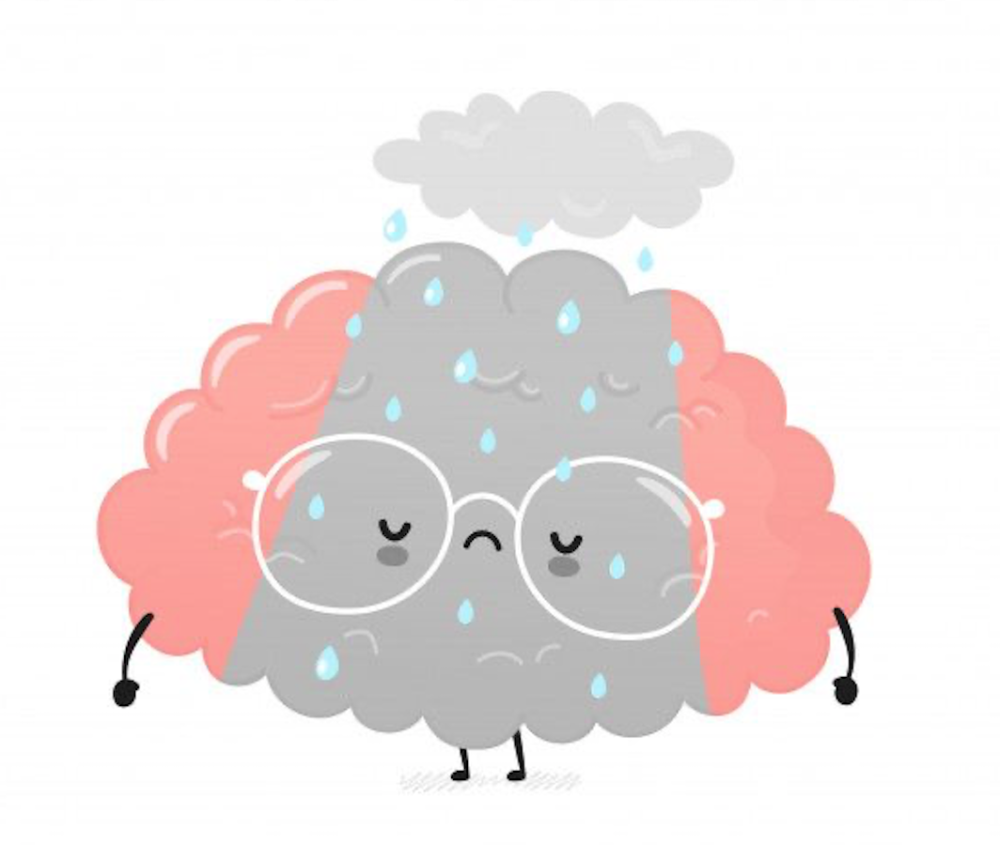
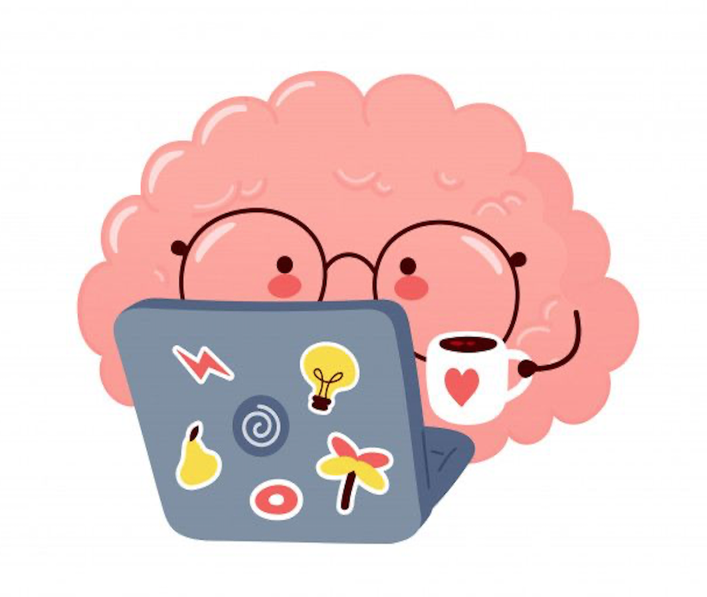

What is neuroplasticity
Neuroplasticity is the ability of the brain to change throughout life.
Neuroplasticity allows changes in the structure of neurons, the
strength of neural connections and pathways, and the physical
structure of the brain. It can even cause the creation of new neurons
(neurogenesis).
The average human brain contains about 86 billion neurons, and each
one is connected to around 1,000 others, creating an incredibly vast
communication network. Each neuron might receive input from thousands
of others before firing its own signal. The more often the connections
between specific neurons are activated, the stronger the attractions
become among them. The pathways formed and the strength of the
connection during communication are what are important in learning,
memory, and recovery from a brain injury.
How does neuroplasticity work?
When we engage in different experiences throughout life, the
brain changes and adapts. Sometimes, this involves strengthening
or weakening pathways. Other times, it might move certain
functions from one area to another, such as if a part of the
brain has been damaged.
Why is neuroplasticity important?
Without neuroplasticity, it would be difficult to learn or
otherwise improve brain function. Neuroplasticity also aids in
recovery from brain-based injuries and illnesses.
How do we increase Neuroplasticity?
Learning new things, traveling places you've never been, and
engaging in creative activities can all help increase
neuroplasticity. Getting adequate sleep and regular exercise
also support brain growth and health.
What is Growth Mindset
The growth mindset is based on the belief that your basic qualities
are things you can cultivate through your efforts. Although people
may differ in every which way in their initial talents and
aptitudes, interests, or temperaments, everyone can change and grow
through application and experience.
-- Carol Dweck
A growth mindset means that you believe your intelligence and talents
can be developed over time. A fixed mindset means that you believe
intelligence is fixed—so if you’re not good at something, you might
believe you’ll never be good at it. The way we think about our
intellect and talents not only affects the way we feel, it can also
affect what we achieve, whether we stick to new habits, or if we will
go on to develop new skills.
How to develop a growth mindset
|

|

|
| Instead of Thinking |
Think This |
| I can't do this. |
I'm still learning. I'll keep trying. |
| I'm not good at this. |
What can I learn to get better at this? |
| It's good enough. |
Is this the best I can do? |
| It's too hard. |
With more practice it will get easier. |
| I'm afraid of making a mistake. |
Mistakes are how I learn and get better. |
| They are better at it than I am. |
What can I learn from them? |
| I don't know how. |
I can learn how. |
| I can't make this any better. |
I can always find ways to improve. |
| I don't like challenges. |
Challenges make me better. |
| I give up. |
I'll try a different way. |
In conclusion, a growth mindset means one embraces challenges,
persists in the face of setbacks, takes responsibility for their words
and actions, and acknowledges that effort is the path toward mastery.
It is basically the reason why “practice makes perfect." By choosing
to make the extra effort to build a growth mindset, you can make your
mental processes work for you, resulting in a greater likelihood that
you get the results you're looking for and live the life you want to
live.